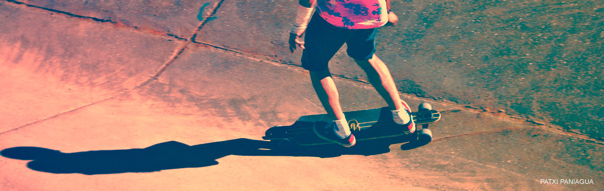

indie
Este término deriva del inglés independent, "independiente" en español y se refiere en general a cualquiera de los géneros, panoramas y subculturas autónomos. Por lo general se da a conocer como "género" y se aplica con respecto a lo musical, aunque no sólo es música lo que conlleva este género, ya que, además, hay cine, moda, videojuegos, artistas plásticos, poetas y escritores. Por ello, la traducción correcta para el término INDIE es la de Movimiento, ya que lo integran una cantidad considerable de artistas de diferentes artes.

skate
Este deporte se desarrolló a comienzos de la década de 1948 como sustituto a la tabla de surf en tierra, quitando las ruedas a unos patines. Creado a partir de una variación del surfing, ha desarrollado una gran atracción e interés para muchos, y suele ser un reclamo publicitario para los jóvenes (skaters o no). Sobre los que patinan, un reportaje del año 2002 para la American Sports Data estimó que había 40,5 millones de skaters en todo el mundo; siendo el 84% menores de 18 años, de los cuales el 74% eran hombres y el 26% mujeres.

rave
Rave, rave dance o rave party, es un término cuya utilización está documentada por vez primera el 4 de abril de 1970 para describir los bailes rave. Posteriormente se aplicó a las fiestas de acid house de los años 1980 caracterizadas por música electrónica de baile rápida, espectáculos de luces y una duración que en ocasiones se extendía durante noches enteras. En estas fiestas, la gente bailaba la música electrónica que pinchaba un DJ. Entre los géneros de música habituales están el house, el techno, el trance y el jungle.